| Animations |
Pentagram's objects have no frame numbers. An object's graphic -- the first byte of its 32-byte record -- chooses both the routine that runs it every turn, through UPDATES, and the sprite it is drawn with, through GRAPHICS, so a thing animates by changing its own graphic: the legs step the low two bits of theirs, a puff counts up from 64 to 71, a crumbling block from 136 to 139, a homer cycles four by a counter. It is Knight Lore's scheme (see Knight Lore's animations); what is animated is Pentagram's.
Each animation below was made by running the game in a simulator when these pages were built: started from the menu, put into the room wanted by the game's own restart (the room and his place written into the player template, and the killed bit set), and then run a turn at a time -- every object's routine, the depth-sorted drawing, the copy to the screen, the wait that evens out the pace -- with each picture read off the screen as the turn left it. Each frame is shown for as long as the game took over its turn, counted in T-states in the simulator, which has none of the memory contention of a real Spectrum, so the game runs a little faster here; a frame drawn the same as the one before is merged into it. A turn in a quiet room is about 45 ms; the game waits out the time a busy one does not use, but cannot give back what it overruns, so busy rooms run slower. The menu and the end screens have no turns: they were read once a television frame (69,888 T-states).
Under each: the graphics shown with their sprites, what was measured in the run, and the frames of the picture with the graphics in them (or what they show) and how long each lasts.
The legs' routine, PLAYER_LEGS, steps the low two bits of their graphic every turn walk is held (HANDLE_FORWARD) -- four frames, of which frame 2 is also the standing pose -- and PLAYER_TOP then makes the body the legs' graphic plus 8, 12 units above them from behind and 8 from the front. The facing is two bits (GET_SPRITE_DIR): the mirror bit, and bit 2 of the graphic, which picks the view from behind (32-35) or the front (36-39). Facing 0 is from behind, mirrored: up and to the left on the screen. Knight Lore's walk is six frames (its animations); this one is four.
Graphics and their sprites: 32 (SPRITE18), 33 (SPRITE21), 34 (SPRITE34), 35 (SPRITE21), 40 (SPRITE40), 41 (SPRITE41), 42 (SPRITE42), 43 (SPRITE41).
Measured: legs 32, 33, 34, 35, body 40, 41, 42, 43; from the first frame to the last he moved U -9 (three units a turn, WALK_STEP_TBL), the turns taking 159,139 to 184,684 T-states.
In the picture: 32+40 (50 ms), 33+41 (50 ms), 34+42 (50 ms), 35+43 (50 ms); 4 frames, 0.2 s in all.
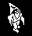
The same cycle seen from the front, mirrored: down and to the right.
Graphics and their sprites: 36 (SPRITE36), 37 (SPRITE19), 38 (SPRITE38), 39 (SPRITE19), 44 (SPRITE44), 45 (SPRITE45), 46 (SPRITE46), 47 (SPRITE45).
Measured: legs 36, 37, 38, 39, body 44, 45, 46, 47; from the first frame to the last he moved U +9 (three units a turn, WALK_STEP_TBL), the turns taking 164,420 to 195,801 T-states.
In the picture: 36+44 (60 ms), 37+45 (50 ms), 38+46 (50 ms), 39+47 (50 ms); 4 frames, 0.2 s in all.
From behind, not mirrored: up and to the right.
Graphics and their sprites: 32 (SPRITE18), 33 (SPRITE21), 34 (SPRITE34), 35 (SPRITE21), 40 (SPRITE40), 41 (SPRITE41), 42 (SPRITE42), 43 (SPRITE41).
Measured: legs 32, 33, 34, 35, body 40, 41, 42, 43; from the first frame to the last he moved V +9 (three units a turn, WALK_STEP_TBL), the turns taking 159,144 to 167,639 T-states.
In the picture: 32+40 (50 ms), 33+41 (50 ms), 34+42 (50 ms), 35+43 (50 ms); 4 frames, 0.2 s in all.
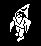
From the front, not mirrored: down and to the left.
Graphics and their sprites: 36 (SPRITE36), 37 (SPRITE19), 38 (SPRITE38), 39 (SPRITE19), 44 (SPRITE44), 45 (SPRITE45), 46 (SPRITE46), 47 (SPRITE45).
Measured: legs 36, 37, 38, 39, body 44, 45, 46, 47; from the first frame to the last he moved V -9 (three units a turn, WALK_STEP_TBL), the turns taking 164,335 to 175,708 T-states.
In the picture: 36+44 (50 ms), 37+45 (50 ms), 38+46 (50 ms), 39+47 (50 ms); 4 frames, 0.2 s in all.
HANDLE_JUMP starts a jump when he is standing on something: a Z step of 8, which MOVE_PLAYER's gravity takes down again, one a turn while jump is held and he is still rising, two otherwise. The legs keep stepping through their four frames all the way, and a jump always carries him forward. Here jump was held from standing until he landed; the picture stays over his place on the floor, so the rise is seen.
Graphics and their sprites: 36 (SPRITE36), 37 (SPRITE19), 38 (SPRITE38), 39 (SPRITE19).
Measured: the legs' Z turn by turn was 128, 135, 141, 146, 150, 153, 155, 156, 156, 155, 152, 147, 140, 131, 128, 128, 128 -- up 28 and down again in 16 turns, rising by 7, 6, 5 ... (8 less a gravity of 1 a turn with jump held) and falling by 1, 3, 5 ... (2 a turn); the jump also carries him forward three units a turn, the way he faces.
In the picture: 38 Z 128 (60 ms), 38 Z 135 (70 ms), 39 Z 141 (50 ms), 36 Z 146 (50 ms), 37 Z 150 (50 ms), 38 Z 153 (50 ms), 39 Z 155 (50 ms), 36 Z 156 (40 ms), 37 Z 156 (40 ms), 38 Z 155 (50 ms), 39 Z 152 (50 ms), and so on; 17 frames, 0.9 s in all.
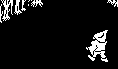
FIRE takes one of the two bolt records on a new press of fire and starts it 16 units in front of him and 4 up, eight units a turn the way he faces (BOLT_STEPS). BOLT steps its graphic down through 150, 149, 151 and round, and holds it at a height of 132; when the collision code cuts its move short in U or V it becomes a puff (START_PUFF): PUFF steps the graphic 64 to 70 a turn at a time, with a burst of noise each, and END_PUFF makes 71 graphic 1, which the drawing code rubs out. The puff is Knight Lore's sparkle put to more uses: every bolt that hits a wall, every thing shot down, the bucket, and the player himself when he dies.
Graphics and their sprites: 150 (SPRITE150), 151 (SPRITE151), 149 (SPRITE149), 64 (SPRITE64), 65 (SPRITE65), 66 (SPRITE66), 67 (SPRITE65), 68 (SPRITE66), 69 (SPRITE66), 70 (SPRITE70), 71 (SPRITE70).
Measured: the bolt's U turn by turn, 134, 126, 118, 110, 102, 94, 86, 78, 70 -- eight a turn from 16 in front of him, at Z 132 -- then the puff, graphics 64, 65, 66, 67, 68, 69, 70, 71, one a turn where it bumped the wall; then the record is empty.
In the picture: - (50 ms), 149 U 134 (70 ms), 151 U 126 (40 ms), 150 U 118 (40 ms), 149 U 110 (40 ms), 151 U 102 (40 ms), 150 U 94 (40 ms), 149 U 86 (40 ms), 151 U 78 (40 ms), 150 U 70 (60 ms), 64 U 70 (50 ms), and so on; 17 frames, 0.9 s in all.
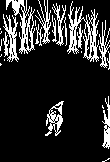
SKY_DROP, once a turn: when DROP_TIMER has run out, one chance in four of a drop into one of the two records kept for them, from FLYER_TEMPLATE at a height of 216 and a random U and V, as one of the eight graphics at DROP_GRAPHICS. Rooms with the well, a quest item or a piece of the pentagram never get one (BAN_DROPS). Graphics 48-51 are a homer (HOMER): it falls, and flies at him, each of its speeds gaining three sixteenths of a unit a turn towards him, and turns round when it bumps into anything; its graphic is a count in +10 of four frames. A homer is not deadly: HOMER never calls MAKE_DEADLY and FLYER_TEMPLATE leaves +D clear, so all it does is get in his way.
Graphics and their sprites: 48 (SPRITE48), 49 (SPRITE49), 50 (SPRITE48), 51 (SPRITE49).
Measured: it appeared at U 104, V 117, Z 215 (FLYER_TEMPLATE's 216, less the first turn's fall); its Z turn by turn 215, 214, 213, 211, 209, 207, 205, 203, 201, 198, 195, 192, 189, 186 ..., down to 128 on turn 27; graphics 48, 49, 50, 51. On turn 21 it came down on top of him -- at Z 151, his legs' Z plus their height, overlapping him in U and V -- for 1 turn, doing him no harm.
In the picture: 49 Z 215 (50 ms), 50 Z 214 (40 ms), 51 Z 213 (40 ms), 48 Z 211 (50 ms), 49 Z 209 (50 ms), 50 Z 207 (50 ms), 51 Z 205 (50 ms), 48 Z 203 (50 ms), 49 Z 201 (50 ms), 50 Z 198 (50 ms), 51 Z 195 (50 ms), and so on; 53 frames, 2.3 s in all.
The same routine, HOMER, with other sprites: the four frames of 160-163.
Graphics and their sprites: 160 (SPRITE160), 161 (SPRITE161), 162 (SPRITE160), 163 (SPRITE163).
Measured: it appeared at U 116, V 118, Z 215 (FLYER_TEMPLATE's 216, less the first turn's fall); its Z turn by turn 215, 214, 213, 211, 209, 207, 205, 203, 201, 198, 195, 192, 189, 186 ..., down to 128 on turn 28; graphics 160, 161, 162, 163. On turn 21 it came down on top of him -- at Z 151, his legs' Z plus their height, overlapping him in U and V -- for 2 turns, doing him no harm.
In the picture: 161 Z 215 (60 ms), 162 Z 214 (50 ms), 163 Z 213 (50 ms), 160 Z 211 (60 ms), 161 Z 209 (60 ms), 162 Z 207 (60 ms), 163 Z 205 (60 ms), 160 Z 203 (60 ms), 161 Z 201 (60 ms), 162 Z 198 (60 ms), 163 Z 195 (60 ms), and so on; 53 frames, 2.4 s in all.
And 164-167, the third homer DROP_GRAPHICS can drop.
Graphics and their sprites: 164 (SPRITE164), 165 (SPRITE165), 166 (SPRITE164), 167 (SPRITE167).
Measured: it appeared at U 108, V 138, Z 215 (FLYER_TEMPLATE's 216, less the first turn's fall); its Z turn by turn 215, 214, 213, 211, 209, 207, 205, 203, 201, 198, 195, 192, 189, 186 ..., down to 128 on turn 30; graphics 164, 165, 166, 167. On turn 21 it came down on top of him -- at Z 151, his legs' Z plus their height, overlapping him in U and V -- for 4 turns, doing him no harm.
In the picture: 165 Z 215 (60 ms), 166 Z 214 (50 ms), 167 Z 213 (50 ms), 164 Z 211 (50 ms), 165 Z 209 (50 ms), 166 Z 207 (50 ms), 167 Z 205 (50 ms), 164 Z 203 (60 ms), 165 Z 201 (60 ms), 166 Z 198 (60 ms), 167 Z 195 (60 ms), and so on; 53 frames, 2.4 s in all.
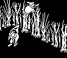
Graphics 80 and 81 enter the spiders' routine ROAMER past its flip: deadly, falling ever faster (its steps are never cleared) but never below a height of 129, running straight at four units a turn and taking a new way when the collision code stops it -- along U if it bumped in V, and the other way round. Bit 0 of the graphic and the mirror bit make four facings from two pictures.
Graphics and their sprites: 80 (SPRITE80), 81 (SPRITE81).
Measured: it appeared at U 144, V 142, Z 215 (FLYER_TEMPLATE's 216, less the first turn's fall); its Z turn by turn 215, 213, 210, 206, 201, 195, 188, 180, 171, 161, 150, 138, 129, 129 ..., down to 129 on turn 12; graphics 80, 81.
In the picture: 81 Z 215 (90 ms), 81 Z 213 (80 ms), 81 Z 210 (70 ms), 81 Z 206 (70 ms), 81 Z 201 (70 ms), 81 Z 195 (80 ms), 81 Z 188 (70 ms), 81 Z 180 (70 ms), 81 Z 171 (70 ms), 81 Z 161 (80 ms), 81 Z 150 (70 ms), and so on; 43 frames, 2.9 s in all.
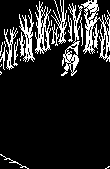
SKY_WALKER: as the runner, but its picture changes every turn between the two graphics of a pair, a two-frame walk, and bit 1 goes with the way it runs.
Graphics and their sprites: 168 (SPRITE168), 169 (SPRITE169), 170 (SPRITE170), 171 (SPRITE171).
Measured: it appeared at U 136, V 145, Z 215 (FLYER_TEMPLATE's 216, less the first turn's fall); its Z turn by turn 215, 213, 210, 206, 201, 195, 188, 180, 171, 161, 150, 138, 129, 129 ..., down to 129 on turn 12; graphics 168, 169, 170, 171.
In the picture: 169 Z 215 (90 ms), 168 Z 213 (70 ms), 169 Z 210 (50 ms), 168 Z 206 (50 ms), 169 Z 201 (50 ms), 168 Z 195 (50 ms), 169 Z 188 (50 ms), 168 Z 180 (60 ms), 169 Z 171 (50 ms), 168 Z 161 (50 ms), 169 Z 150 (50 ms), and so on; 43 frames, 2.2 s in all.
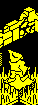
LIFT, graphic 84, in room 94. At rest it waits for him: when he lands on it the collision code marks it (bit 7 of +17, MARK_STOOD_ON) and it starts up, asking for two units a turn and giving him a Z step of three -- it only rises while it keeps bumping into what is on it, so it climbs one unit a turn under him. At 176 it stops and sends him down with a Z step of -2; falling onto it, he pushes it down faster and faster, and at the floor it is at rest, and as he is standing on it, off it goes again.
Graphics and their sprites: 84 (SPRITE11).
Measured: the lift's Z went from 128 to 176 one unit a turn over 48 turns, with his legs 12 above it, and back to 128 in 10 turns: 176, 172, 171, 167, 162, 156, 149, 141, 132, 128, 128 on the way down.
In the picture: 84 Z 128 x2 (240 ms), 84 Z 129 (120 ms), 84 Z 130 (110 ms), 84 Z 131 (110 ms), 84 Z 132 (110 ms), 84 Z 133 (100 ms), 84 Z 134 (100 ms), 84 Z 135 (110 ms), 84 Z 136 (110 ms), 84 Z 137 (100 ms), 84 Z 138 (100 ms), and so on; 60 frames, 6.5 s in all.
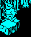
Graphics 140-143 look like a plain block. What stands on one is carried by the collision code (CONVEYOR_PUSH): on every other turn, the first time anything lands on it that turn, the step from CONVEYOR_STEPS for its graphic is added -- +2 in U for 140, as here in room 129 -- and its own routine (CONVEYOR_PLUS_U) only clears the once-a-turn bit again. Room 37's conveyors, by their places in its record, point at rows of spikes.
Graphics and their sprites: 140 (SPRITE11).
Measured: his U turn by turn, 88, 88, 90, 90, 92, 92, 94, 94, 96, 96, 98, 98, 100, 100, 102, 102, 102, 102, 102, 102, 102 -- two units every other turn, the turns the turn counter is odd -- and his Z 142 to 128 as he dropped off its end.
In the picture: U 88 Z 142 (140 ms), U 88 Z 140 (130 ms), U 90 Z 140 x2 (250 ms), U 92 Z 140 x2 (200 ms), U 94 Z 140 x2 (230 ms), U 96 Z 140 x2 (220 ms), U 98 Z 140 x2 (220 ms), U 100 Z 140 x2 (220 ms), U 102 Z 140 (110 ms), U 102 Z 138 (110 ms), U 102 Z 134 (90 ms), U 102 Z 128 (320 ms); 18 frames, 2.2 s in all.
CRUMBLING_BLOCK, graphics 136-139, in room 64. Each turn he stands on it -- bit 7 of +17, set by the collision code when he or the heavy block lands (MARK_STOOD_ON), and bit 3 of +D -- it steps one graphic on, and after 139 it becomes graphic 1 and is rubbed out. He falls to the floor. Knight Lore's crumbling block goes in a frame of sparkle (its animations); this one takes four turns to go.
Graphics and their sprites: 136 (SPRITE11), 137 (SPRITE137), 138 (SPRITE138), 139 (SPRITE139).
Measured: the block's graphic turn by turn, 136, 137, 138, 139, 0, 0, 0, 0, 0, 0; his legs' Z 142, 140, 140, 140, 140, 138, 134, 128, 128, 128.
In the picture: 136 (60 ms), 137 (60 ms), 138 (60 ms), 139 (50 ms), - x4 (250 ms); 8 frames, 0.5 s in all.
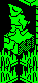
SINKING_BLOCK, graphic 78, in room 146. With him on it, whatever Z step the collision code passes it becomes -1, so it sinks one unit a turn and takes him down with it, until it reaches the floor.
Graphics and their sprites: 78 (SPRITE11).
Measured: the block's Z went from 152 to 128, one unit a turn for 24 turns, with him on top, and stopped on the floor.
In the picture: 78 Z 152 (100 ms), 78 Z 151 (100 ms), 78 Z 150 (100 ms), 78 Z 149 (80 ms), 78 Z 148 (80 ms), 78 Z 147 (90 ms), 78 Z 146 (100 ms), 78 Z 145 (100 ms), 78 Z 144 (90 ms), 78 Z 143 (90 ms), 78 Z 142 (90 ms), and so on; 26 frames, 2.6 s in all.
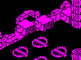
Graphic 87 (PACER_U, in DEADLY_PACER_U) moves two units a turn along U and 88 (PACER_V, in DEADLY_PACER_V) along V, turning round whenever they bump into something (bit 0 of +10 keeps the way). In room 2 they are platforms high among the blocks, and he can ride them: a pacer passes its step to what stands on it.
Graphics and their sprites: 87 (SPRITE11), 88 (SPRITE11).
Measured: graphic 87 along U, 73 to 152; graphic 88 along V, 73 to 168, two units a turn and turning at each end; 72 turns of 402,186 to 669,291 T-states.
In the picture: 88 U 88 V 126, 87 U 80 V 104 (140 ms), 88 U 88 V 128, 87 U 78 V 104 (130 ms), 88 U 88 V 130, 87 U 76 V 104 (120 ms), 88 U 88 V 132, 87 U 74 V 104 (120 ms), 88 U 88 V 134, 87 U 73 V 104 (120 ms), 88 U 88 V 136, 87 U 75 V 104 (120 ms), 88 U 88 V 138, 87 U 77 V 104 (140 ms), 88 U 88 V 140, 87 U 79 V 104 (150 ms), 88 U 88 V 142, 87 U 81 V 104 (150 ms), 88 U 88 V 144, 87 U 83 V 104 (140 ms), 88 U 88 V 146, 87 U 85 V 104 (150 ms), and so on; 72 frames, 10.1 s in all.
Graphic 86 (DEADLY_BOBBER) is made deadly and goes on into BOBBER: falling one unit a turn until it lands, then rising a unit a turn to 176, then falling again -- for ever, with nobody near. Here room 88's two heads, which start together and stay together, from one landing to the next.
Graphics and their sprites: 86 (SPRITE86).
Measured: Z from 128 up to 176 in 48 turns, one a turn -- the first turn up too: the step of 2 that BOBBER sets on landing is overwritten with 1 before it moves -- and down one a turn to 128 in 48; the two heads move together.
In the picture: 86 Z 128 (70 ms), 86 Z 129 (70 ms), 86 Z 130 (70 ms), 86 Z 131 (70 ms), 86 Z 132 (70 ms), 86 Z 133 (70 ms), 86 Z 134 (70 ms), 86 Z 135 (70 ms), 86 Z 136 (70 ms), 86 Z 137 (70 ms), 86 Z 138 (70 ms), and so on; 97 frames, 6.8 s in all.
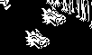
Graphics 92 and 93 are the same pacers made deadly first (DEADLY_PACER_U, DEADLY_PACER_V), with a head's sprite. Room 6's two pace along V, out of step.
Graphics and their sprites: 93 (SPRITE86).
Measured: graphic 93 along V, 105 to 151, two units a turn and turning at each end; 56 turns of 232,016 to 310,750 T-states.
In the picture: 93 V 144, 93 V 110 (90 ms), 93 V 142, 93 V 112 (80 ms), 93 V 140, 93 V 114 (80 ms), 93 V 138, 93 V 116 (70 ms), 93 V 136, 93 V 118 (70 ms), 93 V 134, 93 V 120 (70 ms), 93 V 132, 93 V 122 (70 ms), 93 V 130, 93 V 124 (70 ms), 93 V 128, 93 V 126 (70 ms), 93 V 126, 93 V 128 (70 ms), 93 V 124, 93 V 130 (70 ms), and so on; 56 frames, 4.2 s in all.
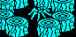
SPIDER, graphic 89: deadly, falling, and turned over every other turn, which is its scuttle; it moves diagonally four units a turn in U and V and picks a new diagonal at random (bit 3 of RANDOM and of R) whenever it bumps into something. Room 9's is penned in by blocks.
Graphics and their sprites: 89 (SPRITE16).
Measured: its steps from turn to turn were (-4, -4), (-4, +0), (-4, +4), (+0, -4), (+0, +4), (+4, -4), (+4, +0), (+4, +4) in U and V -- four and four when nothing is in the way, less where the collision code cuts a step short.
In the picture: 89 U 132 V 136 (150 ms), 89 U 136 V 132 (120 ms), 89 U 140 V 128 (100 ms), 89 U 140 V 124 (100 ms), 89 U 136 V 128 (100 ms), 89 U 132 V 132 (110 ms), 89 U 128 V 136 (110 ms), 89 U 124 V 136 (120 ms), 89 U 128 V 132 (110 ms), 89 U 132 V 128 (110 ms), 89 U 136 V 124 (100 ms), and so on; 40 frames, 4.1 s in all.
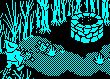
WELL, the well (graphic 120), counts in +14 the turns a bolt touches it (BOLT_TOUCHING: within two units, the first bolt record's puff counting too, the second's not). On the 32nd, if no bucket is out, it copies its own record into a free one as the bucket, graphic 90, at the well's U and 8 further in V, 141 up: on top of the well. The count is in the well's own record, so the 32 must come in one visit to the room. Here room 123's well, shot at from across the pool of flat spikes in front of it (a bolt flies at a height of 132, over things one unit high).
Graphics and their sprites: 120 (SPRITE120), 90 (SPRITE90), 150 (SPRITE150), 151 (SPRITE151), 149 (SPRITE149), 64 (SPRITE64).
Measured: the well's count (+14) over these turns, 16, 16, 16, 17, 18, 19, 20, 21, 22, 23, 24, 24, 24, 24, 24, 24, 24, 25, 26, 27, 28, 29, 30, 31, 0: one more on every turn a bolt, or the first bolt record's puff, touched it; on the 32nd the bucket appeared, turn 25 of the picture, and the count went back to 0.
In the picture: count 16 x3 (390 ms), count 17 (130 ms), count 18 (120 ms), count 19 (110 ms), count 20 (100 ms), count 21 (90 ms), count 22 (90 ms), count 23/count 24 (190 ms), count 24 x6 (740 ms), count 25 (130 ms), count 26 (120 ms), and so on; 26 frames, 3.4 s in all.
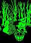
Put down in a room with a quest item not yet done, the bucket (BUCKET) finds it and from then on rises a unit a turn to 176 while HEAD_FOR_TARGET steers it over the item. When it can move no more it tells the item (bit 0 of +16), plays the quest-item tune with the game standing still, and turns into a puff. The item (QUEST_ITEM) then becomes its finished form, graphic + 4 in its record and its quest record (CHANGE_GRAPHIC), and a life is added. Here quest item 0, graphic 112, in room 122, with the bucket put down 24 units from it.
Graphics and their sprites: 90 (SPRITE90), 112 (SPRITE112), 116 (SPRITE116).
Measured: put down under him (TAKE_OR_LEAVE lifts him onto it), the bucket first slid 10 turns towards the item along the floor, a unit a turn, unable to rise with him on it; out from under him, it rose from Z 128 to 176, 48 turns; the turn it arrived took 2.42 s, the quest-item tune (TUNE_QUEST) played inside it; then the puff, and the item went from graphic 112 to 116.
In the picture: 90 Z 128 112 x11 (730 ms), 90 Z 129 112 (70 ms), 90 Z 130 112 (70 ms), 90 Z 131 112 (70 ms), 90 Z 132 112 (70 ms), 90 Z 133 112 (70 ms), 90 Z 134 112 (70 ms), 90 Z 135 112 (70 ms), 90 Z 136 112 (70 ms), 90 Z 137 112 (70 ms), 90 Z 138 112 (70 ms), and so on; 66 frames, 7.2 s in all.
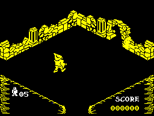
Not an animation the game plays. When the fourth quest item is done, ALL_FOUR_DONE sets PENTAGRAM_ON, and from then on QUEST_INTO_ROOM lets the eight pieces of the pentagram, 128-135, into room 82 when it is built; before, they are kept out. Room 82 as it was built before the first quest item and after the fourth, in the same game, each shown for a second and a half.
Graphics and their sprites: 128 (SPRITE128), 129 (SPRITE129), 130 (SPRITE130), 131 (SPRITE131), 132 (SPRITE132), 133 (SPRITE133), 134 (SPRITE134), 135 (SPRITE135).
Measured: pieces of the pentagram (graphics 128-135) among the room's records, 0 before and 8 after.
In the picture: before (1500 ms), after (1500 ms); 2 frames, 3.0 s in all.
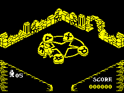
In room 82 with the pentagram there, a collectable (COLLECTABLE) glides a unit a turn in U and V towards its own place from TARGETS without falling; there it becomes graphic + 8, a still thing, and PLACED counts it. The fifth ends the game with a jump to WON: the congratulations, the winning tune, the game-over screen with the percentage (PERCENTAGE), its tune, a wait, and the menu. For this picture the five were put into room 82, each 16 units short of its place with a clear way to it, as the build's quest session does; the rest is the game.
Graphics and their sprites: 144 (SPRITE144), 145 (SPRITE145), 146 (SPRITE146), 147 (SPRITE147), 148 (SPRITE148), 152 (SPRITE144), 156 (SPRITE148).
Measured: 15 whole turns of the glide with PLACED at 0, and in the next all five reached their places together, PLACED going to 5, and the game left the turn for WON; then the congratulations (under the winning tune) for 7.6 s and the game-over screen (under its tune, then the wait) for 11.5 s, and the menu.
In the picture: 0 placed x14 (2650 ms), 0 placed/5 placed/game over (280 ms), the win x5 (7750 ms), game over x7 (11640 ms), the menu x7 (1180 ms); 34 frames, 23.5 s in all.
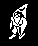
Killed -- bit 6 of +D, which the collision code sets when he touches something deadly -- the legs mark the body too, and both become puffs (PLAYER_LEGS, PLAYER_TOP, START_PUFF). When both records are empty, OBJECT_DONE starts the next life: RESTART_PLAYER copies the player template, which holds him as he came into this room, over both records, and the room is built again. There is no materialising, as there is in Knight Lore: he is simply there. Here the killed bit was set with nothing near him.
Graphics and their sprites: 64 (SPRITE64), 65 (SPRITE65), 66 (SPRITE66), 67 (SPRITE65), 68 (SPRITE66), 69 (SPRITE66), 70 (SPRITE70), 71 (SPRITE70), 38 (SPRITE38), 46 (SPRITE46).
Measured: legs and body turn by turn, 38+46, 64+64, 65+65, 66+66, 67+67, 68+68, 69+69, 70+70, 71+71, 38+40, 38+46, 38+46, 38+46. The long frame near the end is the turn in which the room is built again and the next, which copies the whole of it to the screen.
In the picture: 38+46 (60 ms), 64+64 (40 ms), 65+65 (50 ms), 66+66 (50 ms), 67+67 (50 ms), 68+68/69+69 (90 ms), 70+70/71+71 (90 ms), 38+40 (150 ms), 38+46 (390 ms); 9 frames, 1.0 s in all.
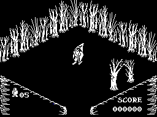
The same death with no lives left: RESTART_PLAYER finds none to take and goes to the game-over screen (GAME_OVER, in WON), and from there to the menu. The picture is the whole screen, read once a television frame.
Graphics and their sprites: 64 (SPRITE64), 65 (SPRITE65), 66 (SPRITE66), 67 (SPRITE65), 68 (SPRITE66), 69 (SPRITE66), 70 (SPRITE70), 71 (SPRITE70).
Measured: the game-over screen (under its tune, then the wait) for 11.4 s -- the wait is 64 times 8192 turns of a 26 T-state loop, WON, about 3.9 s -- before the menu.
In the picture: 38+46 (60 ms), 64+64 (40 ms), 65+65 (50 ms), 66+66 (50 ms), 67+67 (50 ms), 68+68/69+69 (90 ms), 70+70/71+71 (90 ms), 38+40/changing (100 ms), game over x7 (11620 ms), the menu x7 (1200 ms); 22 frames, 13.3 s in all.